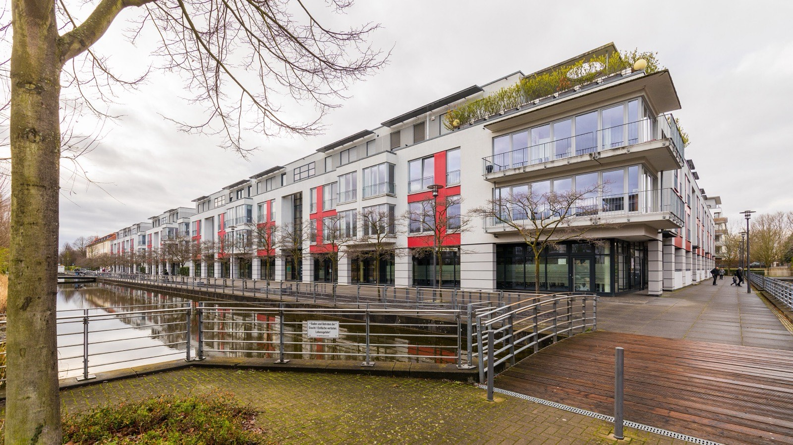
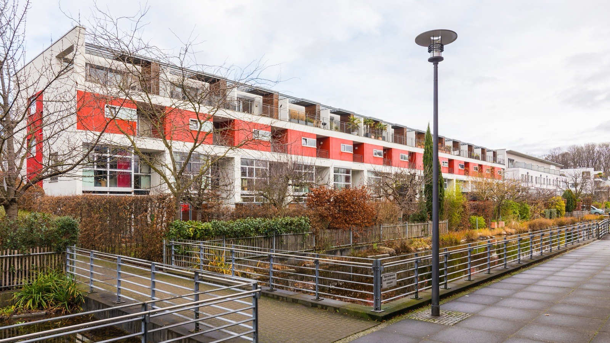
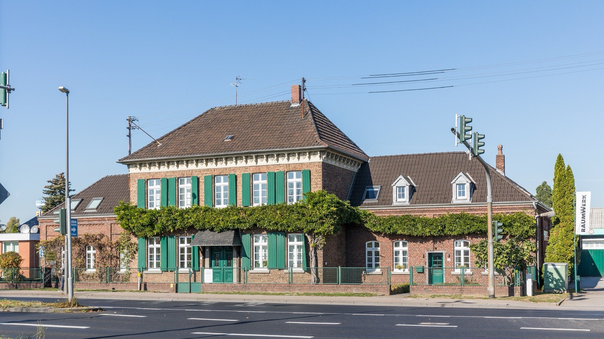

Immobilie in Köln-Junkersdorf verkaufen?Hier verkaufen Sie zuerst das Grundstück — dann erst das Haus.
103 Quadratmeter misst die durchschnittliche Wohnung, 52,6 Quadratmeter entfallen auf jeden Bewohner. Beides gehört zu den höchsten Werten Kölns. Und die Bodenrichtwerte reichen von 970 bis 2.360 Euro — je nach Adresse ein Unterschied von 143 Prozent.
Was könnte Ihre Immobilie in Junkersdorf erzielen?
In sechs Schritten zu einer realistischen Einschätzung. Kostenlos, unverbindlich und ohne Vertrag. Womit fangen wir an?
Andere Objektart wählen52,6 Quadratmeter pro Kopf — Rang vier in Köln
Die Stadt führt für jeden Stadtteil, wie viel Wohnfläche auf den einzelnen Bewohner entfällt. Junkersdorf liegt mit 52,6 Quadratmetern auf Rang vier von 86, hinter Hahnwald (98,7), Marienburg (65,9) und Müngersdorf (55,6). Der Kölner Mittelwert beträgt 40,6.
Die drei Stadtteile davor sind ausgesprochene Villenlagen. Junkersdorf ist das nicht — hier stehen Reihenhäuser, Doppelhaushälften, Stadthäuser und Geschosswohnungen neben Einfamilienhäusern. Der Stadtteil ist also der geräumigste unter den normalen Wohnlagen der Stadt, und das ist ein Verkaufsargument, das sich beziffern lässt.
Die durchschnittliche Wohnung misst 103,0 Quadratmeter gegenüber 77,3 im Kölner Mittel. Zum Vergleich innerhalb dieser Reihe: Altstadt-Süd kommt auf 60,5 Quadratmeter — Junkersdorfer Wohnungen sind im Schnitt also gut zwei Drittel größer.
Wer hier wohnt
7.745 Haushalte teilen sich 7.769 Wohnungen; anders als in vielen Kölner Stadtteilen gibt es also keinen Engpass. 19,6 Prozent der Haushalte leben mit Kindern, mehr als im Kölner Mittel von 17,7 — und deutlich mehr als in den Innenstadtlagen, wo der Anteil bei sieben bis elf Prozent liegt. Der Anteil der Einpersonenhaushalte liegt mit 48,0 Prozent unter dem Stadtwert von 51,9.
Nur 1,2 Prozent des Wohnungsbestands sind öffentlich gefördert, stadtweit 6,2 Prozent. Zusammengenommen ergibt das einen klaren Käuferkreis: Familien und Paare mit gesicherter Finanzierung, die Fläche suchen und dafür längere Wege in Kauf nehmen.
Praktisch heißt das für den Verkauf: Zimmerzahl, Grundstück, Garten, Stellplatz und Schulweg zählen hier mehr als der Quadratmeterpreis. Und weil Junkersdorf keinen Wohnungsmangel kennt, entscheidet die Qualität des einzelnen Angebots — nicht die Knappheit des Marktes.
Was allein der Boden unter Ihrem Haus wert ist
In Junkersdorf trägt das Grundstück einen erheblichen Teil des Gesamtwerts. Stellen Sie die Grundstücksgröße ein und sehen Sie, wie weit die drei Eckwerte des Stadtteils auseinanderliegen.
Zehn Bodenrichtwertzonen von 970 bis 2.360 €/m², Median 1.890.
Bodenwert nach Zone
Zwischen günstigster und teuerster Zone liegen 625.000 € — bei identischem Grundstück.
Der Bodenrichtwert ist ein amtlicher Durchschnitt für eine Zone, kein Verkehrswert Ihres Grundstücks. Er gilt für ein unbebautes Grundstück in üblichem Zuschnitt; Größe, Form, Bebaubarkeit, Geschossflächenzahl, Baulasten und die vorhandene Bebauung verschieben den tatsächlichen Wert erheblich. Bei einem bebauten Grundstück kommt der Gebäudewert hinzu — oder ein Abschlag, wenn ein Abriss einzukalkulieren ist. Was Ihr Objekt erzielen kann, klärt die kostenlose Bewertung.
Marktdaten Köln-Junkersdorf
- Bodenrichtwert
- 970–2.360 €/m²Median 1.890 · 10 Zonen · Stichtag 1.1.2026
- Wohnung, Weiterverkauf
- 4.414 €/m²103 Kaufverträge 2025
- Wohnung, Neubau
- 10.170 €/m²nur 3 Kaufverträge 2025
- Wohnungsbestand
- 7.769 Wohnungen103,0 m² im Schnitt · 43 Neubauten 2025
Amtliche Werte — Quellen und Methodik.
Zehn Zonen, 143 Prozent Unterschied
BORIS NRW teilt Junkersdorf zum 1. Januar 2026 in zehn Wohnbauland-Zonen zwischen 970 und 2.360 Euro je Quadratmeter, der Median liegt bei 1.890. Die Spanne von 143 Prozent ist die viertgrößte aller Kölner Stadtteile — nach Müngersdorf, Ostheim und Rodenkirchen.
Für ein Grundstück von 450 Quadratmetern bedeutet das rechnerisch 437.000 Euro in der günstigsten und 1.062.000 Euro in der teuersten Zone. Der Unterschied von gut 625.000 Euro entsteht allein aus der Adresse, bei identischer Fläche. Zum Einordnen: Eine durchschnittliche Eigentumswohnung im Stadtteil kostet nach den Zahlen von 2025 rund 455.000 Euro. Ein Grundstück ist hier also oft mehr wert als eine ganze Wohnung.
Daraus folgt der wichtigste praktische Hinweis dieser Seite: Wer ein Haus in Junkersdorf verkauft, sollte wissen, in welcher Zone es liegt, bevor er über einen Preis spricht. Ein Durchschnittswert für „Junkersdorf" kann um mehrere Hunderttausend Euro danebenliegen. Wir prüfen das anhand der Adresse, bevor wir rechnen.
Eine Zahl, die Sie nicht verwenden sollten
Der Grundstücksmarktbericht weist für Junkersdorf einen Neubauwert von 10.170 Euro je Quadratmeter aus — der höchste aller Kölner Stadtteile. Ermittelt wurde er aus drei Kaufverträgen. Aus drei Fällen lässt sich kein Marktwert ableiten; ein einzelnes außergewöhnliches Objekt genügt, um einen solchen Durchschnitt in jede Richtung zu verschieben. Die belastbare Zahl für den Stadtteil sind die 4.414 Euro aus 103 Weiterverkäufen. Wer die Neubauzahl als Argument für seine Bestandsimmobilie heranzieht, verliert Interessenten, bevor das Gespräch beginnt.
Richtwerte, kein Preisschild. Für Ihr Objekt zählt der Zustand im Detail — dafür rechnen wir kostenlos eine Wertindikation oder kommen persönlich vorbei.
Ein ganzes Viertel, entstanden aus einer Kaserne

Im November 1949 zogen die belgischen Streitkräfte in die Kaserne Haelen, zuvor Etzelkaserne der Wehrmacht. Über Jahrzehnte war sie Hauptquartier der belgischen Streitkräfte in Deutschland; nebenan entstand eine belgische Siedlung mit eigenem Kino und Offizierskasino. Der Abzug der belgischen Einheiten aus dem Kölner Umfeld war 2004 abgeschlossen.
Aus Kaserne und Siedlung wurde das Stadtwaldviertel — ein Wohnquartier, das die denkmalgeschützten Bestandsgebäude einbezieht. Im früheren Kommandantengebäude ist heute ein integratives Wohnprojekt untergebracht; eine Plakette trägt seit 2004 den Namen Gottfried-Ballin-Haus.
Für den Immobilienmarkt hat das eine konkrete Folge: Ein erheblicher Teil des Junkersdorfer Bestands ist keine dreißig Jahre alt und wurde als zusammenhängendes Quartier geplant — mit Wasserläufen, Promenaden und einheitlicher Gestaltung. Wer dort verkauft, verkauft in ein Umfeld hinein, das Käufer als Ganzes wahrnehmen. Das ist ein Vorteil, solange die eigene Immobilie mithält; es macht Vernachlässigung aber auch sichtbarer als in gewachsener Bebauung.

Diese Zweiteilung — gewachsener Ortskern auf der einen, geplantes Quartier auf der anderen Seite — ist der Grund für die zehn verschiedenen Bodenrichtwertzonen. Sie erklärt auch, warum zwei Häuser mit derselben Wohnfläche in Junkersdorf sehr unterschiedlich bewertet werden können.
Wo die Unterschiede innerhalb des Stadtteils liegen
Der alte Ortskern um die Dürener Straße mit Höfen wie dem Kemmerlingshof ist kleinteilig gewachsen. Grundstückszuschnitte fallen hier sehr unterschiedlich aus, was sowohl Chancen als auch Fallstricke birgt: Ein tiefes Grundstück kann Ausbaureserven haben, ein schmales dagegen schwer bebaubar sein. Ohne Blick in den Bebauungsplan lässt sich das nicht beurteilen.
Das Stadtwaldviertel im Norden ist der jüngste Teil, geplant und ausgezeichnet, mit Wasserläufen und Promenaden. Käufer vergleichen hier weniger mit dem Rest von Junkersdorf als mit anderen hochwertigen Neubaulagen im Kölner Westen.
Zum Stadtwald und zum Grüngürtel hin zählt die Nähe zum Grün in Gehminuten. Der Kölner Stadtwald grenzt östlich an — für Familien und Ältere ein Argument, das gleichrangig neben der Zimmerzahl steht und deshalb ins Exposé gehört.
Entlang der Dürener Straße und am Militärring steht die beste Anbindung neben der stärksten Verkehrsbelastung. Die Stadtbahn erschließt den Stadtteil Richtung Innenstadt, die Autobahnen sind über den Militärring schnell erreichbar. Für Pendler ist das ein Vorteil, für Selbstnutzer mit Kindern kommt es auf die genaue Lage zur Straße an.
In den Siedlungsbereichen dazwischen überwiegen Reihenhäuser und Doppelhaushälften aus den Nachkriegsjahrzehnten. Hier entscheidet der Sanierungsstand über den Preis: Ein Haus von 1965 mit neuer Heizung, neuen Fenstern und gedämmtem Dach erzielt spürbar mehr als das baugleiche Nachbarhaus im Originalzustand — und die Käufer wissen das.
Worauf es bei einem Haus hier ankommt
Weil der Bodenwert einen großen Teil des Gesamtwerts trägt, verschiebt sich der Blick: Grundstücksgröße, Zuschnitt und Bebaubarkeit sind kein Nebenaspekt, sondern der Ausgangspunkt. Dazu kommen Energieausweis, Heiztechnik, Zustand von Dach und Fenstern sowie mögliche Ausbaureserven im Dachgeschoss. Wer diese Unterlagen vor der Vermarktung zusammenhat, spart später Wochen — und muss keine Fragen offen lassen, die ein Käufer als Preisargument nutzt.
Auch tätig im Stadtbezirk Lindenthal und Umgebung:
Was Eigentümer in Junkersdorf am häufigsten fragen
Das beginnt mit der Frage, in welcher der zehn Bodenrichtwertzonen es liegt. Die Werte reichen von 970 bis 2.360 Euro je Quadratmeter — bei 450 Quadratmetern Grundstück sind das rechnerisch 437.000 gegenüber 1.062.000 Euro, allein aus der Adresse. Erst danach kommen Baujahr und Sanierungsstand, Energieträger, Wohnfläche und Grundriss, Ausbaureserven im Dach, Garten und Stellplätze. Einen belastbaren Quadratmeterpreis für Häuser weist der Grundstücksmarktbericht für Junkersdorf nicht aus; ein Haus wird hier als Gesamtobjekt bewertet.
Nein. Diese Zahl ist zwar der höchste Neubauwert aller Kölner Stadtteile, beruht aber auf ganzen drei Kaufverträgen. Aus drei Fällen lässt sich kein Marktwert bilden — ein einzelnes außergewöhnliches Objekt genügt, um den Durchschnitt in jede Richtung zu verschieben. Belastbar sind die 4.414 Euro je Quadratmeter aus 103 Weiterverkäufen. Wer die Neubauzahl als Argument für eine Bestandsimmobilie heranzieht, verliert die aufmerksamsten Interessenten in den ersten beiden Wochen.
Weil Junkersdorf aus sehr verschiedenen Teilen besteht. Der alte Ortskern um die Dürener Straße ist kleinteilig gewachsen, mit uneinheitlichen Grundstückszuschnitten. Das Stadtwaldviertel im Norden entstand dagegen als geplantes Quartier auf dem Gelände der früheren belgischen Kaserne Haelen und wurde mit dem Kölner Architekturpreis ausgezeichnet. Dazwischen liegen Siedlungsbereiche aus den Nachkriegsjahrzehnten. Die Spanne von 143 Prozent zwischen günstigster und teuerster Zone ist die viertgrößte aller Kölner Stadtteile.
Etwas über dem Schnitt, aber kein Ausreißer. Die durchschnittliche Wohnung in Junkersdorf misst 103,0 Quadratmeter — der elfthöchste Wert unter 86 Stadtteilen und deutlich über dem Kölner Mittel von 77,3. Zum Vergleich: In Köln-Altstadt-Süd sind es 60,5. Große Wohnungen sind hier also der Normalfall, was zugleich heißt, dass Fläche allein kein Alleinstellungsmerkmal ist. Über den Preis entscheiden Grundriss, Zustand, Außenfläche und Stellplatz.
Überwiegend Familien und Paare mit gesicherter Finanzierung. 19,6 Prozent der Haushalte leben mit Kindern, mehr als im Kölner Mittel von 17,7 und deutlich mehr als in den Innenstadtlagen mit sieben bis elf Prozent. Der Anteil der Einpersonenhaushalte liegt mit 48,0 Prozent unter dem Stadtwert. Nur 1,2 Prozent der Wohnungen sind öffentlich gefördert. Entsprechend zählen Zimmerzahl, Garten, Stellplatz, Schulweg und die Nähe zum Stadtwald mehr als der reine Quadratmeterpreis.
Ab November 1949 lag dort die Kaserne Haelen, zuvor Etzelkaserne der Wehrmacht, über Jahrzehnte Hauptquartier der belgischen Streitkräfte in Deutschland. Nebenan bestand eine belgische Siedlung mit Kino und Offizierskasino. Der Abzug war 2004 abgeschlossen; aus Kaserne und Siedlung entstand das Stadtwaldviertel, das die denkmalgeschützten Gebäude einbezieht und mit dem Kölner Architekturpreis ausgezeichnet wurde. Für den Markt heißt das: Ein erheblicher Teil des Bestands ist keine dreißig Jahre alt und wurde als zusammenhängendes Quartier geplant.
In den Siedlungsbereichen aus den Nachkriegsjahrzehnten oft ja — dort stehen viele baugleiche Häuser, und der Unterschied zwischen saniert und Originalzustand ist für Käufer unmittelbar sichtbar. Die Frage bleibt trotzdem immer dieselbe: Bringt die Maßnahme mehr ein, als sie kostet? Bei Heizung, Fenstern und Energieausweis lohnt sich zumindest Klarheit, weil danach früh gefragt wird. Große Umbauten rechnen sich seltener als ein gepflegter Gesamteindruck. Wir sehen uns das Objekt an und sagen Ihnen, was sich lohnt.
Als Ausgangspunkt ja, als Preis nein. Der Bodenrichtwert ist ein amtlicher Durchschnitt für eine ganze Zone und unterstellt ein Grundstück in üblichem Zuschnitt. Abweichungen bei Größe, Form, Erschließung, Geschossflächenzahl oder Bebaubarkeit wirken sich erheblich aus, ebenso Baulasten und Altlastenverdacht. In Junkersdorf kommt hinzu, dass unbebaute Grundstücke selten sind — was den Wert eher stützt, aber auch bedeutet, dass es kaum direkte Vergleichsfälle gibt.
Eine seriöse Pauschalangabe gibt es nicht. Was sich sagen lässt: 2025 wurden in Junkersdorf 103 Weiterverkäufe von Eigentumswohnungen beurkundet — ein stetiger Markt. Anders als in vielen Kölner Stadtteilen gibt es hier keinen Wohnungsengpass: 7.745 Haushalten stehen 7.769 Wohnungen gegenüber. Das heißt, die Qualität des einzelnen Angebots entscheidet stärker als anderswo, und ein zu hoher Einstiegspreis wird nicht durch Knappheit aufgefangen.
Nein. Die Bewertungsanfrage ist kostenlos und unverbindlich. Durch die Anfrage entsteht kein Maklerauftrag.
Bildnachweis: René-Magritte-Promenade, Stadthäuser Johannes-Theodor-Baargeldweg und Kemmerlingshof: Raimond Spekking, CC BY-SA 4.0 über Wikimedia Commons. Marktdaten: Gutachterausschuss für Grundstückswerte in der Stadt Köln (Grundstücksmarktbericht 2026, Berichtsjahr 2025), BORIS NRW zum 1. Januar 2026, Stadt Köln – Amt für Stadtentwicklung und Statistik (Einwohner, Haushalte und Wohnungsbestand zum 31. Dezember 2025). Angaben zur Kaserne Haelen, zur belgischen Siedlung und zum Stadtwaldviertel nach Wikipedia. Keine Rechtsberatung.
Was ist Ihre Immobilie in Köln-Junkersdorf wert?
Kostenlose Ersteinschätzung, unverbindlich, diskret und stadtteilgenau.